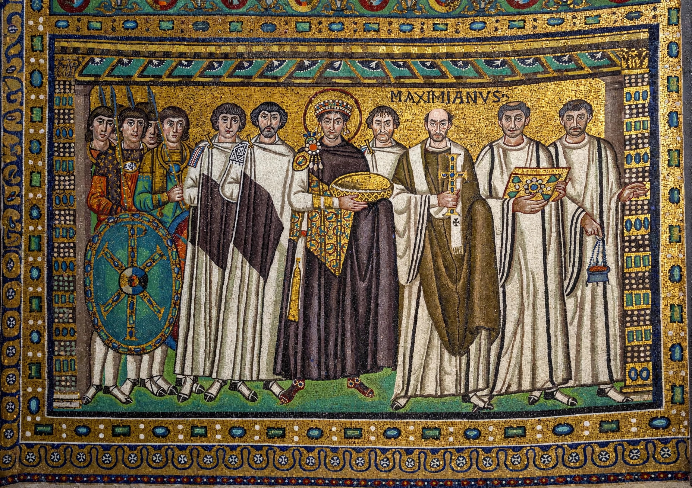

Byzantine mosaics are the wall and vault mosaics of the Byzantine Empire, considered the supreme achievement of Byzantine art. Made of thousands of small glass and stone cubes (tesserae), often backed with gold leaf and set at slight angles to shimmer in the light, they decorated church interiors with images of Christ, the Virgin, saints and imperial patrons against glowing golden grounds.

The finest early examples survive in Ravenna, Italy, which was a Byzantine capital of Italy: the basilica of San Vitale (consecrated 547) holds the famous apse mosaics of Emperor Justinian and Empress Theodora with their courts; Sant'Apollinare Nuovo and Sant'Apollinare in Classe preserve great 6th-century processional friezes of saints and virgins.
In Constantinople itself, the Hagia Sophia retains mosaics including the 10th-century apse Virgin and Child and imperial portraits such as the Zoe panel. The Chora Church (Kariye Mosque) holds the most complete late-Byzantine cycle, with the Deësis and narrative scenes in sparkling detail. Norman rulers of Sicily commissioned Byzantine craftsmen for the great gold mosaics of Cefalù and Monreale cathedrals and Palermo's Palatine Chapel.
Byzantine mosaic programmes followed strict theological logic: the apse dome held Christ Pantocrator or the Virgin, walls carried saints in order of rank, and donors or emperors appeared offering models of the church. The gold background signified divine light rather than earthly space, and figures were stylised for solemnity rather than naturalism.